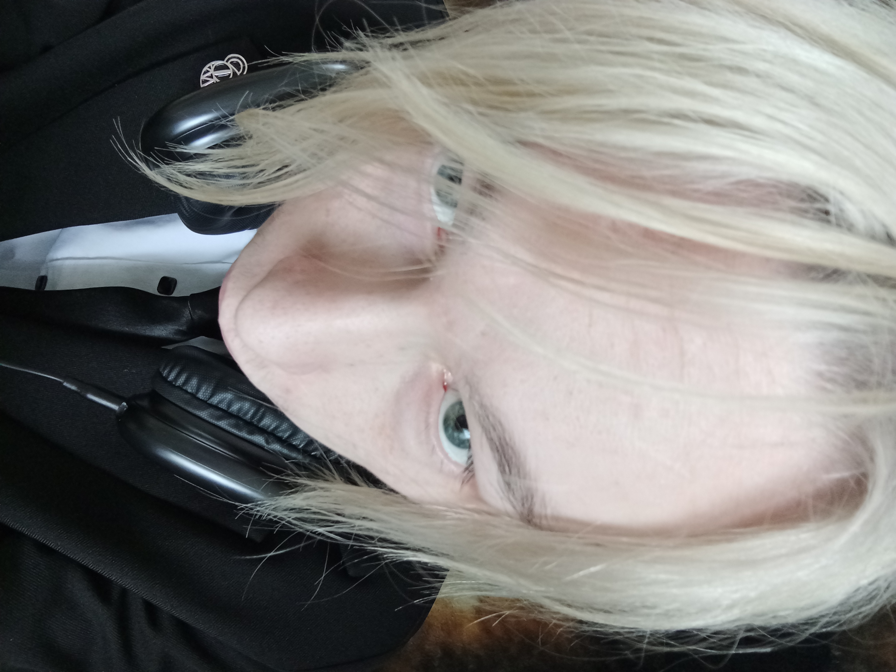

literally my graduation album EP
SKRLT

Об авторе
Этот EP я собрал буквально за час, почти на одном дыхании, без долгих раздумий и перфекционизма. Здесь собраны демки, которые я делал на протяжении всего этого года, в разные моменты, с разным настроением и состоянием. Во многом они отражают мои поиски звучания и эксперименты со стилем. Я вдохновлялся такими исполнителями, как Тёмный принц, $i#dzy, Toby Fox и другими композиторами, чьи работы в какой-то степени повлияли на атмосферу и общее настроение этих треков. Это не что-то вылизанное до идеала — скорее набор живых набросков, кусочков идей и настроений, которые мне захотелось объединить в один релиз. Кстати, помимо музыки я занимаюсь ещё кучей разного дерьма и творческих штук, так что если тебе вдруг стало интересно, можешь чекнуть мой сайт и посмотреть, чем я ещё живу и дышу.